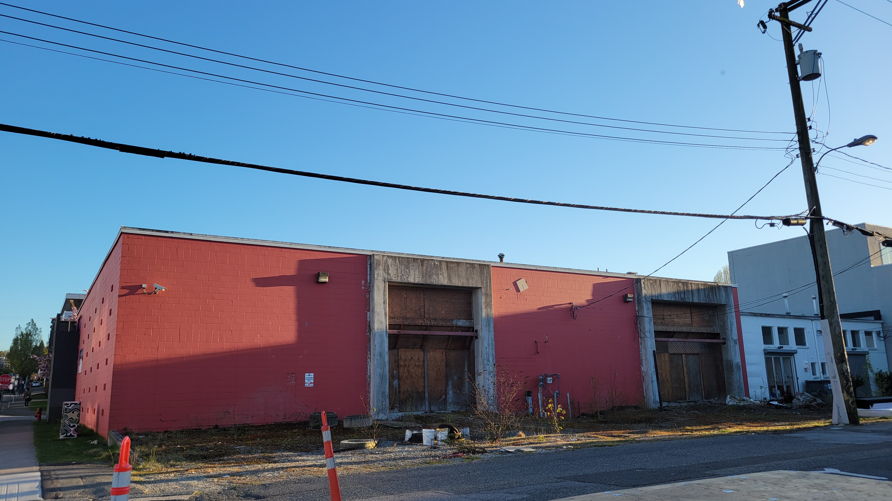
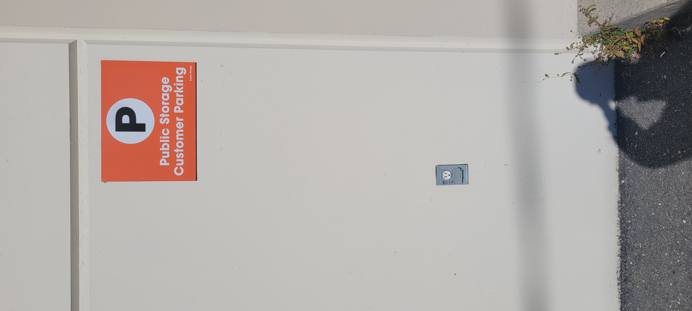
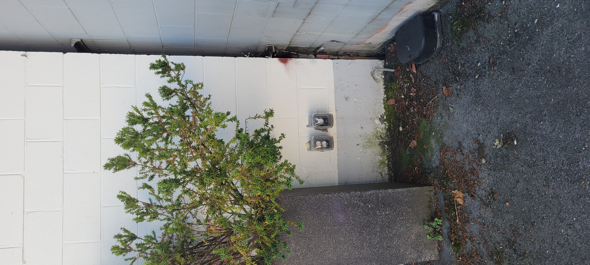
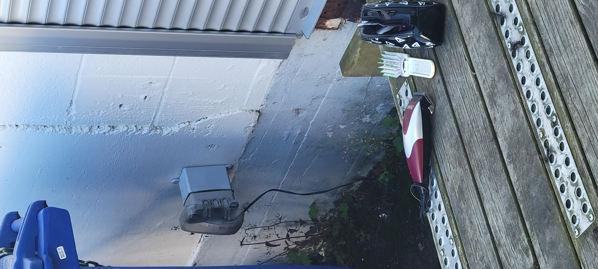
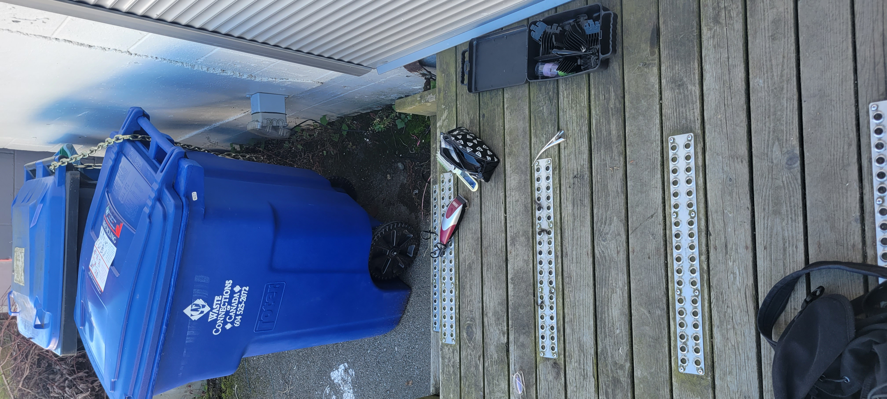
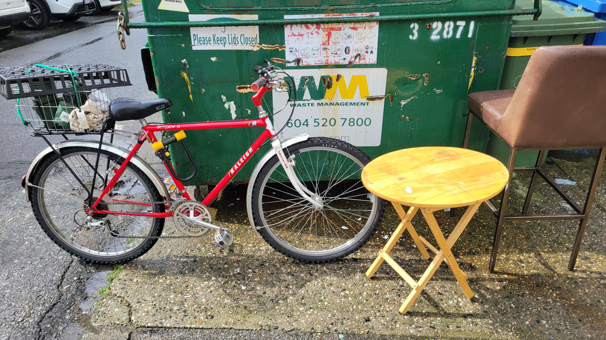
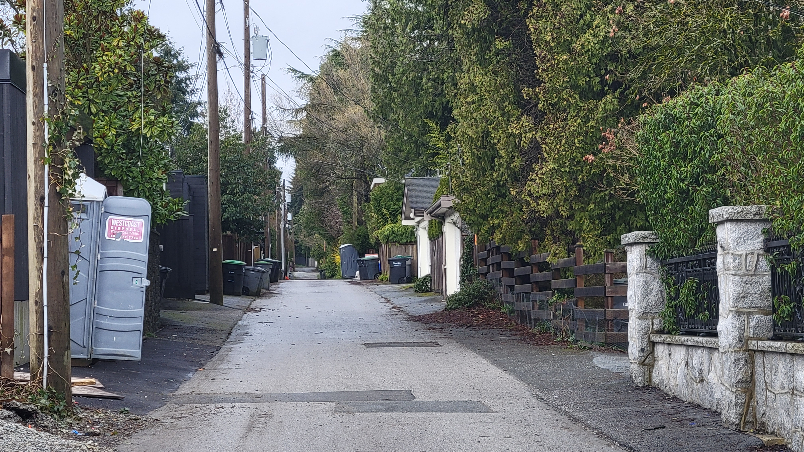
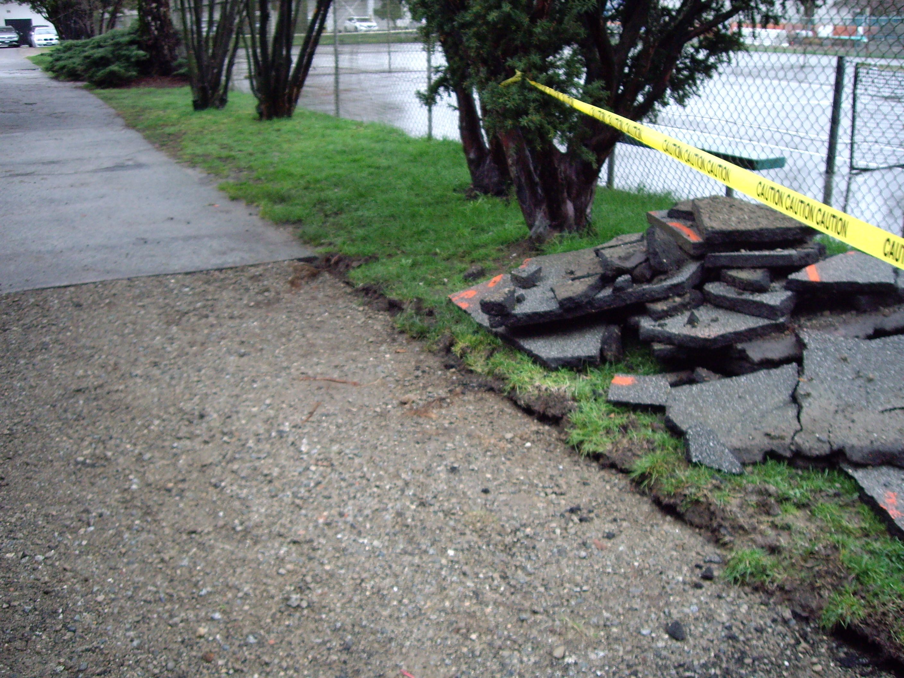
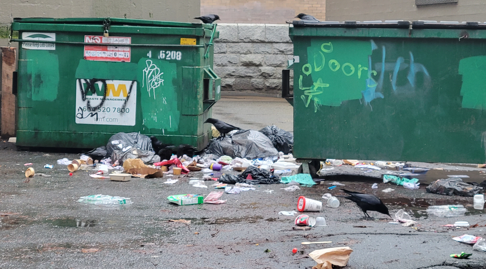
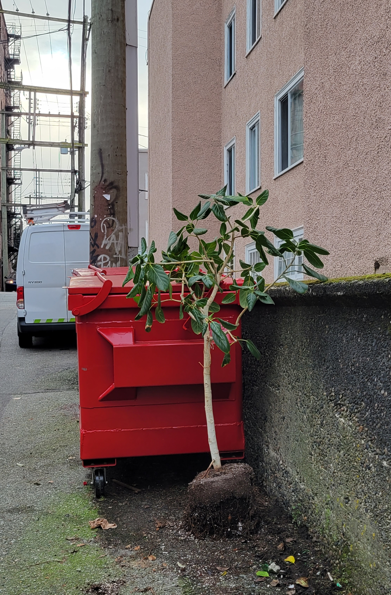

"In an account that foregrounds practice, the question is always how to create conditions for the tuning of
experience to what most generatively runs through it, and how to recognize that these ecologies of practice are
not ours to orient so much as ours to participate in as co-composers in the refashioning of modes of existence
that make up our body-world constellations." (Manning 2020, 36).

"In an account that foregrounds practice, the question is always how to create conditions for the tuning of
experience to what most generatively runs through it, and how to recognize that these ecologies of practice
are not ours to orient so much as ours to participate in as co-composers in the refashioning of modes of
existence that make up our body-world constellations." (Manning 2020, 36).




"This is what materials do: they teach you how to move them, and how to be moved by them" (Manning 2020, 73).
I don't use patterns. I drape around my body and pin and sew. You have to let the dress become what it will. I'm
inspired by Erin Manning's writing on a Japanese designer in Dress Becomes Body chapter of The minor Gesture,
though I began hand sewing in this fashion before I encountered this book. (I'll write more on this later)
Up
my alley:
reading concepts in urban political ecology through practices of urban gleaning
ORIENTATION
The crafting of a research
question is the
crafting of a story that is also the crafting of an ethics.
Natalie Loveless, How to make art at the end of the world
The kind of story, or quality of text, I desire to craft in my PhD has been on my mind lately as I begin assembling my comprehensive reading lists. Orienting toward a topic of study is an ethical matter as it involves foregrounding some concerns to the exclusion of others. While my master's research-creation attended to the everyday experience of urban inhabitation and thinking with/in posthuman entanglements, my praxis lacked recognition of the socio-ecological production of cities. Therefore, in my composition of a list entitled Urban Everyday, I want to foreground the tension between the directness of experience and engagement with broader underlying politics that structure landscapes of encounter. Taking an urban political ecology (UPE) course this term has given me some critical tools with which to think this through: tracking winners and losers as well as the persistent structures that maintain their disparity; narrating humans and nonhumans as dialectical; exploring contradictions; and making ontological claims while also attending to the epistemes from whence they are made (Robbins 2012, 87). What follows renders the effects of my term project, viz., an exploration and response to the question: How might the analytic or "theoretical platform" (Heynen et al. 2006, 8) practiced by urban political ecologists re/orient my approach to urban investigations and the questions that drive my research-creation forwards?
My inquiry takes the form of a diffractive reading in which I read concepts of metabolic circulation and infrastructures as political through my practice of alleyway gleaning. Drawing from Donna Haraway's (1991) initial suggestion of diffraction as a mapping of the effects of difference and Karen Barad's (2007) subsequent ontological elaboration and extension, Karin Murris and Vivienne Bozalek (2019) develop propositions to guide diffractive readings: "The idea is to read theory with practice diffractively guided by, for example, key questions that move the experiment forward" (1505, emphasis in original). Diffractive readings agitate presuppositions, allowing new learnings to interfere with prior convictions. Reading diffractively challenges the fixity of any one configuration of intelligibility while accounting for the differential stakes and constitutive exclusions entailed in each refiguring. Finally, diffractive readings are a way to bring different (even incommensurable) perspectives into relation without antagonism. Focusing on resonances and dissonances will help me clarify the differences that do matter. I believe this sort of exercise serves me well in ascertaining where and how urban political ecology might supplement my study of the urban everyday.
Gleaning is the practice of gathering materials or information from one's surroundings. Gleaning is a way of making do—a means of poaching from and appropriating the dominant (economic) system from within and as part of it (see negative-spaces.github.io/tactics.html for MA thinking on this). A "surreptitious creativit[y]", gleaning is a kind of tactic which "elude[s] discipline without being out side the field in which it is exercised" (de Certeau 1984, 96). Gleaning is taken up in a variety of manners in different contexts (see Agnès Varda's documentary, The Gleaners and I (2000)). I often encounter Vancouver's urban gleaners pushing trolly bags or bikes along the alleyways or up and down Main Street, collecting recyclables from residential and commercial bins, or from municipal garbage bins along the sidewalk that have a specific rim for cans and bottles. These gleaners deposit redeemables for monetary compensation—in other words, it is the exchange value of gleaned items that is operative in this practice. Along Fraser Street, I watch as informal exchange takes place behind a produce grocer. In one of the little plazas—a section of street cordoned off for gatherings and leisure—along Granville, I pass someone filling their plant pot from a municipal planter that's been torn up in preparation for a spring makeover. My own practice takes me to alleyways, curbsides, corridors, and underpasses where I glean not only physical objects but also graffiti. By turning graffiti into stickers and re-siting it around the city, I contribute to a "proliferating illegitimacy" (de Certeau 1984, 96). From my job teaching and consulting on mapping at the university library, I gleaned the skills and knowledge to make websites such as this one and my MA thesis. I appropriate research grants for printing materials as a necessary self-accommodation as much as an interference into dominant economies of knowledge production (see negative-spaces.github.io/rendering.html#sitation for more on this). Finally, the fabric recycling dumpster in my apartment basement as proved a generative site from whence I've obtained a digital camera from 2005 which I take most of my pictures on, photo frames to gift my artwork in, a host of clothing I wear, and plain cotton t-shirts I print my artwork on (see negative-spaces.github.io/the-middle-of-things/what-the-work-can-do.html#unruly-material for theorizing on this).
I chose to reconceptualize alleyways along the lines of urban political ecology through my practice of gleaning because I sense a relational articulation between this particular infrastructure and urban metabolisms. Enrolled in economies of resource extraction and development, Vancouver's alleyways literally pave the way for municipal waste disposal and in so doing, facilitate the ongoing process of urbanization. At the same time and alongside the flows of waste, alleyways facilitate the informal circulation of items set out by those for whom they were no longer useful. Walking alleyways while attending to their material histories, uneven maintenances, and the differential nature of their ecologies, I believe I can glean more than a dish here or a lemon balm clipping and handful of blackberries there. I believe the takeaway will be a more complex view on the politics and ethics of thinking with alleyways, through gleaning practices, and in entangled collaboration with things gleaned.
Although my sites of urban gleaning extend beyond alleyways, I impose this 'enabling constraint' (a term from process philosopher Erin Manning) so as to practice denaturalizing, historicizing, and politicizing an infrastructure my preoccupation with immediacy has heretofore led me to take for granted. Rather than conduct an urban political ecology of Vancouver alleyways (which I feel as yet unprepared to do), I aim to map out the concerns such an account might foreground and outline the kinds of questions I might ask. In short, what's rendered here is my efforts to exercise concepts of urban political ecology learned this term, taking them into my everyday practices in dialogue with infrastructures near and dear to me. I begin what follows by inviting you into my practice. How does gleaning primarily residential alleyways for physical objects differ from other practices of urban scavenging such as food reclamation and redeemable recyclable collection? From the immediacy of walking Vancouver's alleyways, I step/scale back in order to critically consider alleys as infrastructure. What role do alleys play in urban metabolism? What can be gleaned by approaching alleys as sites of continuing circulation that a focus waste/value dialectic of discard under capitalism overlooks by focusing on the contained, exceptional spaces of dumpsters and landfills? Positioning alleyways as urban/izing infrastructure, I continue to denaturalize, historicize, and politicize them by situating them "within and as part of"—to borrow a feminist new materialism's phrase, or more specifically a Baradian figure that conveys the ontological inseparability of subject and object, cause and effect, measurement and instruments/agencies of measurement, concept and experimental setup—the settler-colonial city. I conclude by reflecting on how urban political ecology as a practice might orient continued research-creation and everyday practices.

WALKING
THE ALLEYS
Walking the alleys is a practice I began after moving to Vancouver in
July of 2021. The first neighborhood I lived in was Dunbar, an area predominated by single-family homes on
the city's western limit. Both the larger neighborhood of Dunbar-Southlands and the University Endowment
Lands it borders to the west occupy unceded Musqueam territory. To the south lies the Musqueam Indian
Reserve. Urban Indigeneity—as a historical phenomenon, statistical enumeration, and cultural identity—is
something I've just begun learning about. Since the 1950s, the Aboriginal population in Canada's ten largest
cities has dramatically increased, from a total of 2,506 in 1951 to 301,095 in 2006 (Peters and Andersen
2013, 37). In Vancouver, Statistics Canada's count for Indigenous identity has grown from 239 in 1951 to
40,310 in 2006 (Peters and Andersen 2013, 37) to 63,340 according to the 2021 census (Government of Canada
2023). From what I've read, this significant leap is due not only to natural increase and net migration but
also shifting self-identification as well as changes in who Canada recognizes as Indigenous by allowing to
claim status (Peters and Andersen 2013, 36). Moreover, Aboriginal urbanization was historically stymied by
the settler-colonial intent to keep reserves distant from urban areas, "ostensibly to reduce contact between
settlers and First Nations peoples but also to ensure that prime land was not under the control of First
Nations governments" (Peters and Andersen 2013, 22). First Nations are actors and agents in the urbanization
of Vancouver's landscape. For example, near where I live now, construction is underway on a massive
eleven-tower apartment development on Squamish owned land spearheaded by the Squamish First Nation in
partnership with Westbank (Cyca 2024; “Sen̓áḵw” 2025).
My house in Dunbar was fanatic about reusing and recycling. To parry passive aggressive comments about my discard, I began tossing my garbage into neighbors' bins under cover of night. On a walk with two housemates my first week in Vancouver, we "dumpster dove" for what I want to say were tortillas or flatbreads of some kind still in their packaging. Later on, I drove with another housemate to East Point Grey where we snuck into the backyard of a house slated for demolition and stripped a plum tree of maybe 30 pounds of fruit. The next week, that house and all its trees were torn down. In the alleyway between 30th and 31st Ave I found the Epson WorkForce Pro 4740 printer I use every day for both academic and creative projects. The following winter I moved east to Mount Pleasant into a house whose ample backyard opened onto the alley between 12th and 13th. This alley became my main road and lucrative source of dishware, clothing, shoes, sunglasses, and other items set out in cardboard boxes free for the taking. Every other week (and every week for compost aka "organics"), my roommate or I would sort our plastic recycling, glass, paper, garbage, and organics into bins and place them (sanctioned distances apart) for pickup (by whom? which companies?). Two years later I moved west again to Fairview. While south of Broadway (9th Ave), Fairview consists of two, three, and four story apartment buildings, a couple towers, and single-family homes, Fairview north of Broadway yet east of Burrard is nearly all condominiums and townhouses. The alleys here are paved, sterile spaces where gleaners only come on garbage pick-up days. Waste is sorted indoors and taken out to the alley (by whom?) only on pick-up days (by what companies?). When there's system failure, pileup occurs as seen in banner image triggering elevator notices to "hold organics" or "hold recyclables".
To begin material labor on this term project, I spent an entire day walking Vancouver's alleyways. Sidewalks hail pedestrians in ways alleys do not. In the alley, you're free to move at whatever pace you like and take up as much space as you want (until cars come by). I began my dérive in Fairview near Granville Park, and zig-zagged my way east to Cambie then back, then south into Shaughnessy. Past the massive Oakridge development going up at Oak and 41st, I wandered over to Sunset and then into Victoria-Fraserview. Finally tired, I rode the 22 bus down Victoria and Commercial Drive. Stepping of at 4th, I walked west towards Clark Drive, under the skytrain and past Clark Station until I could catch the 84 bus back to Granville. At Brewing August, I re-read some class readings from early in the term. I intentionally began my alley walk in a direction I don't often wonder so as to disorient myself. I didn't use Google Maps the entire day. Having forgotten to bring water and it being one of the first truly warm days this year, I became quite dehydrated. Thankfully, I wandered through public parks with water fountains. An additional problem was the lack of public toilets, especially in residential neighborhoods. My "guileful ruse" (de Certeau 1984, 37)? The many unlocked portapotties dotting the alleyways for real estate construction.

Vancouver's alleys generally run east-west, though they also run north-south along major north-south streets
like Granville, Main, Fraser, Clark, Commercial, and Victoria to accommodate commercial businesses. Of
course there are exceptions—tangled places where alleys turn onto more alleys. For instance, the area south
of Clark Park or around where Victoria and Argyle Drive meet. Across the city, different assemblages cohere
in the alleys making some areas more lucrative for gleaning. For instance, there is generally more graffiti
in the alleyways of East Vancouver, the West End, and Downtown Eastside. Clothing, dishware, electronics,
and other once-belongings are more often set out in the alleyways of low-rise apartment buildings in
residential neighborhoods, while cardboard boxes of free items are set in front of single-family homes. (The
cartography of gleaning is something I could write so much more on given the time.) The alleys themselves
have different vibes, constituted in part by the kind of buildings, houses and backyards that foreground
them. In Victoria-Fraserview, backyard food provisioning predominates, with the whole backyard converted
into a garden. I saw something similar though less extensive in the area just east of Renfrew and 1st.
What else grows in alleyways untended? Mosses, dandelions, "invasives" like blackberries and scotch broom, sometimes rosemary, lots of lemon balm and one very impressive lavender bush. (I want to read Kevin Anderson's dissertation on what he calls "marginal nature" as it relates to the ecologies of alleyways as well as vacant lots and road verges which I've been thinking about lately.)
There are animals too: crows, racoons, possums, rats, as well as insects.
There is so much more alleys I could address. Given the time, I could render a more nuanced cartography of Vancouver's alleys. I would be interested in looking at archival urban planning documents to get a sense of when residential roads and alley were constructed, as well as the history of waste management in Vancouver. The closest I've come to this latter concern is Hailey Venn's MA thesis on an environmental history of Vancouver's landfill in Delta in which alley sare not mentioned. I'd also like to respond to a question my interlocutor recently posed: how do you know something is out to be gleaned? Finally, I recognize my practice of walking the alleyways, and primarily residential ones, is distinct from gleaners looking for specific items such as cans or food reclamation. Moreover, "alley walks" mean something specific in the context of the Downtown Eastside where they refer specifically to a harm reduction practice of walking an alley to ensure no one has overdosed alone.
ALLEY
MATTERS
The alleyways of Vancouver are paved with asphalt or, less frequently, compacted gravel. Pavement upkeep
varies across the city. To my surprise, the alleys in Shaughnessy (a very wealthy neighborhood) are more
often gravel and full of potholes.
Asphalt is a combination of petroleum and aggregate (graded small rocks/gravel) (“Asphalt” 2025; “How Is
Asphalt Made? A Look Inside the Manufacturing Process” 2024). Aggregate is quarried outside the city's
limits in places like Abbotsford by companies like Fraser Valley Aggregate. Interestingly, in 2012,
Vancouver began incorporating recyclable plastics into its asphalt in an effort to brand itself "the
greenest city" (Ridden 2012). Like waste-to-energy incinerators, incorporating plastics into asphalt is a
means of extracting further symbolic and use value from discarded matters. Plastics are recuperated from
being waste; embedded in infrastructure, their life as a commodity is extended. Yet what doesn't make
headlines is this small detail: the plastic used was not local recycling but rather brought in from Ontario
(CBC News 2012). Whose interests are at the heart of this endeavor? Who stands to gain? Is there a way this kind of carbon sequestration can be read as a spatial fix—a materially new avenue for the commodification of plastic discard?

Alleyways literally pave the way for municipal waste disposal. They facilitate the movement of discarded matters from the container that delimits them as waste—specifically colored and signed dumpsters, bags, and bins—to sorting facilities, the landfill, and waste-to-energy incinerator in Metro Vancouver (see map here). An urban political ecology focused specifically on municipal waste in Vancouver might follow the flows of waste, as well as the different companies that collect it across the city. There are multiple. For example: "Recycle BC is responsible for residential curbside and multi-family recycling service in the City of Vancouver" ("Vancouver - Recycle BC" 2024), WM provides "residential waste pickup, commercial garbage collection and dumpster rental services" (“Services in the Vancouver, British Columbia Area” 2025), and Maple Leaf Disposal picks up residential, commercial, and industrial waste as well as recycling and organics ("Maple Leaf Disposal | Waste Disposal | British Columbia, Canada," 2024). GFL Environmental is yet another company with the signature chlorophyll-green trucks and the slogan "green for life". Lastly, I just saw a red Waste Control Services truck drive by, a North Vancouver company that deals with recycling, organics, and waste (“About WCS” 2025).
In class, I learned that while discard in relation to consumption has always existed, waste as a concept and set of matters is historically produced. In a seminal paper on the afterlives of waste in India, geographers Gidwani and Reddy (2011) argue "'Waste' is the political other of capitalist 'value'" (1625). Archival documents from British colonial rule define waste as unproductive nature—for example fallow land—"an untapped potential awaiting transformation into value by dint of human labor and colonial stewardship" (2011, 1630). Gidwani and Reddy trace imperial conceptualizations of waste back to John Locke's 1681 treatise, in which Locke grants property rights to those whose labors ensured that land did not go to 'waste'. (Implicit in his argument is, of course, an understanding that such labor did not need to be direct; a servant would not inherit the property of his master simply by working the land.) For Locke, laboring against waste is the route to political citizenship. (Remember above how colonial Canada's distancing of Reserves from urban areas was, in part, to "ensure that prime land was not under the control of First Nations governments" (Peters and Andersen 2013, 22).) Shifting their focus to postcolonial Delhi, Gidwani and Reddy (2011) examine the commodification of municipal solid waste and the privatization of waste disposal infrastructure since 2005. The privatization of "bin space" (Gidwani and Reddy 2011, 1637) meant that specific dumpsters as well as broader "catchment areas" around the city, once gleaning grounds negotiated amongst informal waste collectors, became limited resources.
Also interested in "bin space" (Gidwani and Reddy 2011, 1637) is anthropologist David Boarder Giles, who explores dumpsters as sites of abjection. Following the waste/value dialectic introduced by Gidwani and Reddy (2011), Giles (2021) argues that waste is the constitutive outside of market value—what's thrown away maintains the value of what's in circulation (33). The making of waste—through disposal and disposability—is thus a necessary part of capitalist production and reproduction. Giles builds his argument from the context of dumpster diving carried out by Food Not Bombs, a worldwide movement to cook and (often surreptitiously) distribute free meals made from salvaged food waste. Given more time, I'd like to read A Mass Conspiracy to Feed People (Giles 2021) all the way through and carefully examine his invocation of "postcapitalist surplus" (3) and "nonmarket commodities" (9) in relation to the work of J.K. Gibson-Graham. When I read J.K. Gibson-Graham closely for my geographical political economy course project last term, I felt the constitutive relation between capitalism and noncapitalism was not adequately addressed. Neither was materiality. Where Gibson-Graham's diverse economies remained (ironically) a predominantly discursive endeavor, I argued that discursive reconfiguration is at once a material reconfiguration with consequences that quite literally matter. Given this, I am having a hard time reconciling food waste as both necessary to capitalism but also a postcapitalist surplus. These kinds of superpositions are something I'm generally interested in because of my gleaning tactics, and I want to see how Giles negotiates these delineations.
I was also surprised Giles never mentioned metabolism even though his book was all about re/circulation and feeding people. The concepts of circulation and metabolism date back to the 1600s and 1800s respectively (Swyngedouw 2006, 23). Metabolisms as a framework for understanding processes of consumption and excretion have since proliferated from the scale of individual human biology to ecology as well as the natural and social sciences (Zhang 2020). Urban political ecologists employ the concept of an urban metabolism to get at the "circulation, exchange, and transformation of material elements" (Swyngedouw 2006, 27) that constitutes urbanization. To my understanding, this reframing marks the city as the effect of ongoing processes rather than a static object with fixed boundaries and properties. (This way of understanding "the city" makes a lot of sense to me in my Baradian agential realist approach.) "Nature" is not something out there, beyond city limits, but produced dialectically with "the urban". In his deliberation on "(hybrid) natures and (cyborg) cities, geographer Erik Swyngedouw writes:
A dialectical approach recognises both the radical non-identity of actants (human and non-human) enrolled
in socio-metabolic processes within an assemblage, while recognising the social, cultural, and political
power relations embodied relationally in these socio-natural imbroglios. The production of (entangled)
things through metabolic circulation is necessarily a process of fusion, of the making of 'heterogenous
assemblages', of constructing longer or shorter networks. In fact, both 'hybridity' and 'cyborg' are
misleading tropes, and may even be implicated in radically reproducing the underlying binary
representation of the world. Hence, the bracketing of 'hybrid' and 'cyborg' in the title of this section
refers exactly to the 'excess of meaning' inscribed in coding the city as either 'hybrid' or 'cyborg'.
(Swyngedouw 2006, 33)
I understand metabolic transformations to generate entangled relations. Nature and city are constituted in their metabolising of one another, and therefore cannot be taken on their own. They are internally related. The city as cyborg indexes this irreducible fusion. In her Cyborg Manifesto, which Swyngedouw is referencing, Donna Haraway writes: "cyborg politics is the struggle for language and the struggle against perfect communication, against the one code that translates all meaning perfectly…cyborg politics insist on noise and advocate pollution" (1991, 176). The alleyway resists easy interpellation as the colon of an urban metabolic. While alleyways mediate the movement of municipal waste out and away from people's homes, they also facilitate noncapitalist circulation of discarded items which, while not entirely waste (yet), no longer hold use value for a particular household. They are relinquished to the alley in hopes someone else might extend their lifespan. Alleyways at once support the production of waste as a kind of matter under capitalism, thus constituting market value of what remains in capitalist circulation, and also infrastructure the proliferation of absolutely free things. Gifts. There is intermixing, too, as some items don't end up ever moving and the waste-space of dumpsters is breached by scavengers. Finally, humans are not the only gleaners. Crows feast on the excess of consumption, metabolizing capitalism's waste right there in the alleyway. This is all to say the alleys site multiple metabolic process simultaneously.Something to explore further would be how different kinds of gleaning operate within and as part of Vancouver's urban metabolism.

Reading more about discard studies and the waste/value dialectic, I began to see where my gleaning practice diverges from the interests of urban political ecology. Municipal waste and recycling are not the only discarded matter circulating in the alleyway. Elsewhere, I've written of alleys being porous spaces where belonging is in flux. Operating on urban denizens’ tacit knowledge of the city, matters deemed useful are offered up as open-ended invitations for recirculation by passersby. Crucially, items are set beside dumpsters specifically to be gleaned. They are not deemed garbage and so not consigned to waste bins. Of course, as a classmate reminded me, these items are still being put out to the alley and moved around. There is no guarantee, however, items set beside the dumpsters will be taken as many a soggy chair can attest to. Waterlogged and disintegrating, what's not taken sort of becomes part of the alley. My argument is that there is a vial difference between trawling through the en/closed sites of dumpsters/landfill/recycling bins and walking the alleys as an open-ended practice. I believe the very nature of items as intentionally and anonymously offered up freely to be recirculated by passersby is what opens their use value to being refigured. While recyclable scavenging turns on exchange value, my gleaning practice turns on use value. While food waste reclamation is about use value, in focusing on what's in side dumpsters it's about recuperating food's use value as food. My reinterpretation is more capacious. Whats interesting about considering the alleyway as opposed to the en/closed sites of abjection is how, as an infrastructure, they mediate/facilitate different circulations simultaneously that rely on one another but also differently articulate with capital and capitalism.

POLITICIZING ALLEYS AS INFRASTRUCTURE
Alleys are infrastructure in that they materially facilitate the movement of discarded matters around and (often, though not always) out of the city. They also facilitate the movement of people to and from their residences, especially in cars. Through reading urban political ecology texts this term, I learned to regard infrastructures as political. Infrastructures entangle humans and nonhumans. In Hydraulic City (2017), anthropologist Nikhil Anand Writes: "Infrastructures are neither ontologically prior to politics nor are they merely effects of social organization. Infrastructures are flaky accretions of sociomaterial processes that are brought into being through relations with human bodies, discourses, and other things…always in formation and…always coming apart" (13, emphasis in original). Vancouver's alleys are flaky in the sense that they are unevenly maintained, used differently across the city, and, as mentioned above, spaces of differential assembly—assemblies whose differential makeup reflects broader underlying politics that structure urbanization in Vancouver. To what extent are alleyways sites of negotiated belonging where people, plants, animals, graffiti, activities, and discarded matters are rendered in/out of place by complex and situational boundary making practices? How does one alley (or tangle of alleys) become preferred for gleaning over others (and by whom)? Again, what is not for gleaning? What is in excess of meaning making? These questions could drive a continued urban political ecology of alleyways.
In a plenary lecture on urban geography, Deb Cowen asked: "What can be gleaned by approaching the city through the infrastructural systems that constitute its materiality" (Cowen 2019, 479)? Applying geography's 'follow the thing' method to infrastructure, Cowen explores the distributed, ongoing role of railways in the colonial making of Canada and Canadian cities. While not specifically an urban political ecology, I found her account helpful in thinking through the role of alleyways in sustaining a settler-colonial city. Her attention to infrastructure as both method and object of inquiry (471) is an orientation I want to bring to my work with alleyways. "Through infrastructure," writes Cowen, "cities were constituted as spaces of intimate imperialism" (2019, 480). Pairing the concept of urban metabolism with ideas of infrastructure as political, I wonder whether alleyways are also infrastructures of ongoing, everyday colonialism, contested citizenship, and differential belonging. Last term, I took a geographical political economy course for whose final project I read J.K. Gibson-Graham. In that paper (referenced above) but also in that term's directed reading output (see what-the-work-can-do), my understanding of diverse economies and postcapitalist politics deeply influenced by thinking I'd been doing through my crafting practices at the time. Basically, I concluded by framing my urban gleaning practices as participating me in noncapitailst economies and the production of noncapitalist commodities. However, reading alleyway gleaning through urban political ecology this term, the question arises, What does it mean to situate alleyway gleaning as an alternate or marginal form of circulation, one happening alongside the disposal of waste which constitutes capitalist market value, when alleys are denaturalized and politicized? What does it mean to participate in noncapitalist forms of circulation such as scavenging and gleaning when the giving and taking of these excesses or surpluses is facilitated by an infrastructure that maintains ongoing urbanization of a settler-colonial city?
Geographer David Hugill (2017) draws a distinction between literature on the colonial city, which treats colonization as a historic phenomenon, and those on the settler-colonial city, which recognize colonialism as ongoing. Hugill calls on geographers to "renovate and extend their interpretations of the 'urban' implications of colonial practice" (2017, 2). Yet, in thinking with what I've learned this term, I'm inclined to refigure his question in order to ask: What are the colonial implications of my urban practices, specifically alleyway gleaning? My contention is that the colonial implications of settler urban practices may be a significant object/site of inquiry, especially when those practices are assumed to be counter-hegemonic.
In his book Carbon Sovereignty (2023), Andrew Curley (Diné) highlights how settler-colonial theory can be ahistorical in failing to account for how "the dispossession of Indigenous peoples from their lands (one of the key elements of settler-colonial theory) changes shape and practice over time" (14). While infrastructures mediate the disposal of municipal waste, thus sustaining the urban metabolic of a settler-colonial city, to frame alleyways as only or entirely operands of settler-colonial urbanization doesn't account for Indigenous agency and participation in the city and Vancouver's ongoing urbanization. Counter to the "long historical tradition in Western thought that holds urban and Aboriginal cultures to be incompatible" (Peters and Andersen 2013, 29), Indigenous people live in cities, Indigenous people experience urbanization, and First Nations are actively developing real estate that's visibly refiguring the skyline. Failing to denaturalize, historicize, and politicize alleyways as infrastructure of the settler-colonial city leads to a romanticization of alleys as alter-economic spaces, and their generalization across the city. As a non-Indigenous settler theorizing and practicing deep mapping, gleaning, and (here) urban political ecology on the unceded Coast Salish lands, it is important I reflect on the specific ways my urban (research; navigational) practices might participate in what Natalie Baloy (2016) describes as settler coloniality's holographic in/visibility of urban Indigeneity, wherein Indigenous peoples' presence in the city is simultaneously hypervisible and invisible to the settler gaze. Reading urban political ecology through my urban everyday has been a generative beginning.
CONCLUSION
While Michel de Certeau's Practice of Everyday Life (1984), tremendously influential to my prior work, attends to poaching in symbolic terms, his theory ironically lacks practical engagement with those practices on which he writes. In reading alleyway gleaning through urban political ecology, I've tried to consider the ethics and politics associated with this suppositively counter-hegemonic tactic. My overarching question came down to: how does denaturalizing, historicizing, and politicizing alleyways reorient my practice of urban gleaning? How does it change the way I inhabit/engage the urban everyday? Although I began oh so early, my project ballooned in many directions and so in the end, I wasn't able to incorporate everything I wanted in this write-up. Some of the texts which most inspired me didn't make it in because I didn't have time to do them justice. While sad about this, I do feel like the above, winding as it may be, was helpful as a first step in finally writing about alleys. That this entry be through the lens of urban political ecology has been incredibly fruitful.
Some differences that matter arose. For instance, reading Maan Barua's critiques of new materialisms in Lively Cities (2023), I realized how important it is that I distinguish Baradian posthumanism and distributed agency from not only the problematic transhumanism registers, but also other, less rigorously ethico-onto-epistemologized, posthumanisms. In the work I do, I see a need for matter to matter, just just materials, and think the commonplace (non)definition of sentience echos vitalist geographies which I differentiated myself from in my MA (see the end of the section Thinking through deep mapping). Moreover, I'm left wondering where my practice of gleaning would fit into discard studies, if at all.
Through the course of this class and final project, my hope was to gain an understanding of how the tools of urban political ecology might help me see the politics that structure landscapes of encounter in the immediacy of the urban everyday. What I've learned is that even if I'm not doing an urban political for my PhD, I can still practice urban political ecology! What I'm suggesting for myself is a reorientation of urban political ecology from an analytic to an ethic. In their introduction to A Postcapitalist Politics (2006), J.K. Gibson-Graham write:
If politics is a process of transformation instituted by taking[sic] decisions in an undecideable terrain, ethics is the continual exercising, in the face of the need to decide, of a choice to be/act/think a certain way. Ethics involves the embodied practices that bring principles into action. (xxviii)
Making the choice, over and over, to continue reading tools and concepts I learned this term through my everyday research-creation, I take on urban political ecology as an ethic of orienting toward the world.
Barad, Karen. 2007. Meeting the Universe Halfway: Quantum Physics and the Entanglement of Matter and Meaning. Durham, NC: Duke University Press.
Barua, Maan. 2023. “Introduction: The Urban in a Minor Key.” In Lively Cities: Reconfiguring Urban Ecology, 1–24. Minneapolis, MN: University of Minnesota Press.
Gibson-Graham, J. K. 2006. A Postcapitalist Politics. Minneapolis: University of Minnesota Press.
Gidwani, Vinay, and Rajyashree N. Reddy. 2011. “The Afterlives of ‘Waste’: Notes from India for a Minor History of Capitalist Surplus.” Antipode 43 (5): 1625–58. https://doi.org/10.1111/j.1467-8330.2011.00902.x.
Giles, David Boarder. 2021. A Mass Conspiracy to Feed People: Food Not Bombs and the World-Class Waste of Global Cities. Duke University Press.
Government of Canada, Statistics Canada. 2023. “Indigenous Identity Population by Gender and Age: Canada, Provinces and Territories, Census Metropolitan Areas and Census Agglomerations.” November 15, 2023. https://www150.statcan.gc.ca/t1/tbl1/en/tv.action?pid=9810029201.
Haraway, Donna. 1991a. “A Cyborg Manifesto: Science, Technology, and Socialist-Feminism in the Late Twentieth Century.” In Simians, Cyborgs, and Women: The Reinvention of Nature, 149–81. Routledge.
———. 1991b. “The Promises of Monsters: A Regenerative Politics for Inappropriate/d Others.” In Cultural Studies, edited by Lawrence Grossberg, Cary Nelson, and Paula Treichler. Routledge.
Heynen, Nik, Maria Kaika, and Erik Swyngedouw. 2006. “Urban Politica Ecology:Politicizing the Production of Urban Natures.” In In the Nature of Cities: Urban Political Ecology and the Politics of Urban Metabolism, edited by Nik Heynen, Maria Kaika, and Erik Swyngedouw, 1–20. Questioning Cities Series. London, [UK] ; New York, NY: Routledge.
Loveless, Natalie. 2019. How to Make Art at the End of the World: A Manifesto for Research-Creation. Duke University Press.
“Maple Leaf Disposal | Waste Disposal | British Columbia, Canada.” 2024. Maple Leaf Disposal. 2024. https://www.mapleleafdisposal.com.
Murris, Karin, and Vivienne Bozalek. 2019. “Diffracting Diffractive Readings of Texts as Methodology: Some Propositions.” Educational Philosophy and Theory 51 (14): 1504–17. https://doi.org/10.1080/00131857.2019.1570843.
Swyngedouw, Erik. 2006. “Metabolic Urbanization: The Making of Cyborg Cities.” In In the Nature of Cities: Urban Political Ecology and the Politics of Urban Metabolism, edited by Nik Heynen, Maria Kaika, and Erik Swyngedouw, 21–40. Questioning Cities Series. London, [UK] ; New York, NY: Routledge.
Zhang, Amy. 2020. “CIRCULARITY AND ENCLOSURES: Metabolizing Waste with the Black Soldier Fly.” Cultural Anthropology 35 (1): 74–103. https://doi.org/10.14506/ca35.1.08.
this section is still in progress
The physical composition of body and mind required to read (and metabolize and retain meaning) poses immense barriers I've spent the past 4 years finding creative ways to break down. In anticipation of reading for my comprehensive exams, I've been honing my practice. What follows is a provisional and open-ended articulation of my reading tactics. Take what works and leave what doesn't.
Use Hard Copies.
I take notes in the margins as I read. If ideas/connections come up, I'll write them on a post it note which I'll either put on my desk/wall, or stick in the book itself. Another way I like to take notes (in class or as I read) is on a blank piece of copy paper. This way I can fill the page however I want (I hate lined paper), and I can highlight my notes if necessary. I number my pages and staple them together, then fold the notes and slip them in the back of the book. Keeping my notes together with my readings is a helpful organizational tactic for me. I'll often make a notes page after I read a theory heavy book, where I go back through the book and write down different passages or ideas. Sometimes I'll even make a bunch of pieces of paper - organize them by different concepts or ideas, and then fill them out as I review the text. Taking notes separately, like on a computer, doesn't help me. If I must, I'll print them out and then attach to the reading. I do think that hand writing is best for in-the-moment notes. You can always do a writing session later where you summarize the text etc. I also carry small journal - blank around with me im always jotting ideas. I don't use a single notebook for reading notes though because i read so many different things - like the copy paper because it can be associated with the text and only that.
Mark up texts.
Marking up texts helps me metabolize information. I'm incredibly particular about my writing utensils because the feeling of what I'm handling matters. I use a plain old fashioned pencil or ballpoint pen and two crayola crayons, one of them yellow. I'm always loosing things and also like to have writing utensils in all may bags/pockets, so this is a low cost way to do that. I love highlighting with crayola crayons because the texture is satisfying and the color never fades. I have my own system for underlying, circling, highlighting etc. but others likely figure this out themselves. Generally I just highlight important passages that I want to visually spot later with yellow, and use the accent color for major points or to emphasize paragraphs. These just act as visual cutes to return to etc. and help me feel engaged while reading. my pencil is for note taking in the margins. Not fastidious about marking up texts according to all these codes, just want to stay engaged - marking up helps me process what im reading.
On taking notes.
I take notes in the margins as I read. If ideas/connections come up, I'll write them on a post it note which I'll either put on my desk/wall, or stick in the book itself. Another way I like to take notes (in class or as I read) is on a blank piece of copy paper. This way I can fill the page however I want (I hate lined paper), and I can highlight my notes if necessary. I number my pages and staple them together, then fold the notes and slip them in the back of the book. Keeping my notes together with my readings is a helpful organizational tactic for me. I'll often make a notes page after I read a theory heavy book, where I go back through the book and write down different passages or ideas. Sometimes I'll even make a bunch of pieces of paper - organize them by different concepts or ideas, and then fill them out as I review the text. Taking notes separately, like on a computer, doesn't help me. If I must, I'll print them out and then attach to the reading. I do think that hand writing is best for in-the-moment notes. You can always do a writing session later where you summarize the text etc. I also carry small journal - blank around with me im always jotting ideas. I don't use a single notebook for reading notes though because i read so many different things - like the copy paper because it can be associated with the text and only that.
Use Flags.
when books, especially, do second read through after to look at highlights etc, then add flags. show my rundown of coding etc.
Physical organization.
Figuring out a sustainable way to organize hard copies is important. Folders and standing organizers can work well. I have multi-colored plastic shelving units which I took the handles off and labeled with masking tape. This way I can take a whole shelf out and it acts like a bin containing papers related to a concept or project. Papers I don't use so often or that were related to a class I store out of site. I imagine space limitations will be come an issue at some point, as will the number of papers I have printed. But I will deal with that issue when it arrises. Having digital copies just doesn't work whatsoever. [pictures] organize and reorganize etc.
Curate a surround
Different kinds of reading may require different conditions. Reading theory or something I'm - invested -in i have to be entirely alone. I think it's because I have to make myself so porous to be open to receiving and integrating new information, and I become more sensitive to external stimuli like sounds, smells, temperatures - another person around. I like room with few visual distractions - space where i can be for multiple consecutive hours. Whatever your ideal reading space is (and it might take trial and error to figure out) curating this environment can really help. Before reading, get all the things you might need so you don't have to get up. Water, chapstick, writing utensils, clock. Do you need any books to keep you conceptual company. . often out of the house xyz. wher i can go for bounded time. curating a surround can also be about the place youpre in. before reading, get all the things you might need so you don't have to get up.
Craft enabling constraints
specific location - bounded space like VPL north room reserve go till you can read no more,
another confined space for reading - bus. take 1 paper for 1 bus ride. can be noisy but ive also found that having route or something while reading ideas can come up bc you're reading it through the event and the timespace.
take only what you can actually read with you. putting too many things in bag with you introduces too many options - decision immobilization
set time - pomo for passage of time but also - read for set time like 3 hours or 3 pomos of 35 minutes. i don't really do the pomo method so much as use the clock to give myself a sense of time.
Talk it through. with people. voice recorder -> intercessors
Pivot
Carrying Concepts
On using citational software, like Zotero.
this section is still in progress
practice iterative writing
Write what you want to say, however you can say it.


 ❮
❯
❮
❯